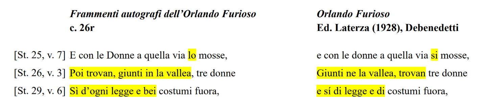

Riproduzione fotografica della carta 26r
Fascicolo V, canto XXXVII, stanze 25-29

Edizione diplomatico-interpretativa
Avendo già presentato la riproduzione fotografica della carta 26r, si è ritenuto
potesse apparire ridondante realizzare un’edizione “ermeticamente” diplomatica della
stessa. Trattandosi di un manoscritto risalente al XVI secolo, e comprendente come
tale una serie di abbreviazioni e una grafia oggi non più consuete, si è preferito
mediare tra la riproduzione fotografica e il testo critico attraverso un’edizione
diplomatico-interpretativa, in ottica di una fruibilità più trasversale. Si è quindi proceduto a “sciogliere” i segni di compendio della carta nelle rispettive forme estese:
➢ in luogo del titulus è riportata la «n»;
➢ a «ꝑ» corrisponde «per»;
➢ «cћ» è trascritto «che»;
➢ «ł», sempre minuscola e simile a una «L» capovolta, è resa a seconda dei casi
specifici: qłla → quella; qł → quel; dłla → della;
➢ la compresenza di «ſ» e «s» è stata uniformata all’uso corrente, trascrivendo
sempre «s».
Edizione critica
È riprodotta a testo l’ultima lezione attestata dal manoscritto. Si è adottata una trascrizione solo parcamente modernizzante della carta ariostesca: oltre agli accorgimenti relativi ai segni di compendio già dichiarati, sono state distinte «u» e «v» ed è stata implementata la punteggiatura, rara ma pur presente, al fine di agevolare la lettura e comprensione del passo. Si è standardizzato per la medesima ragione l’utilizzo delle maiuscole a capoverso, dei nomi propri di persona e di luogo. Gli unici due errori plausibili identificati nell’autografo sono stati emendati e opportunamente segnalati in apparato, rendendone conto nelle note filologiche.
[25]
Stava Ruggier, come io vi dissi, in atto
Di partirsi et havea combiato preso
E da l’arbore il brando già ritratto
Che come dianzi non gli fu conteso;
Quando un gran pianto, che non lungo tratto
Era lontan, lo fe’ restar sospeso
E con le Donne a quella via lo mosse,
Per aiutar dove bisogno fosse.
[26]
Spingonsi inanzi e via più chiaro il suon ne
Viene, e via più son le parole intese.
Poi trovan, giunti in la vallea, tre donne
Che fan quel duolo, assai strane in arnese,
Che fin a l’ombelico ha lor le gonne
Scorciate non so chi poco cortese;
E per non saper meglio elle celarsi
Sedeano in terra e non ardian levarsi.
[27]
Come quel figlio di Vulcan, che venne
Fuor de la polve senza matre in vita,
E Pallade nutrir fe’ con solenne
Cura d’Aglauro, al veder troppo ardita,
Sedendo ascosi i brutti piedi tenne
Su la quadriga da lui prima ordita;
Così quelle tre giovani le cose
Segrete lor tenean, sedendo, ascose.
[28]
Lo spettacolo enorme e dishonesto
L’una e l’altra magnanima guerriera
Fe’ del color che ne i giardin di Pesto
Esser la rosa suol da prima vera.
Riguardò Bradamante e manifesto
Tosto le fu ch’Ullania una d’esse era:
Ullania che da l’Isola Perduta
In Francia messaggiera era venuta.
[29]
E ricognobbe non men l’altre due,
Che dove vide lei, vide esse anchora,
Ma se n’andaron le parole sue
A quella de le tre ch’ella più honora.
E le domanda chi sì iniquo fue,
Sì d’ogni legge e bei costumi fuora,
Che quei segreti a gli occhi altrui riveli,
Che, quanto può, par che Natura celi
Apparato critico
L’apparato è di tipo genetico, orizzontale e progressivo. Le stanze e i rispettivi versi sono indicati in grassetto tra parentesi quadre: alle prime segue un rientro del margine che accoglie la stratigrafia cronologicamente rappresentata delle varie lezioni, precedute dal verso di riferimento. Tutte le considerazioni riguardanti le scelte congetturali operate, nonché le ricostruzioni stratigrafiche più dettagliate all’occorrenza di campagne correttorie particolarmente complesse, sono approfondite di seguito, nelle note filologiche, e debitamente segnalate in apparato mediante il simbolo 🕮.
[25] [2] combiato] as. a congedo
[26] [7] E per non saper meglio elle celarsi] 1AElle che non potean meglio celarsi → 2BEt elle che non puon meglio celarsi (2BEt marg. sx) (2Bpuon sps. a1Apotean) 3CT (as. a 2B Et elle che non puon meglio celarsi) (3Cper da 3C< s > 🕮)
[8] Sedeano] 1ASede< a >no → 2BSedeno (cass. 1A< a >) → 3CT 🕮 ardian] 1Aardian 2Bosan (as. a 1Aardian) 3CT (sps. a 1Aardian) (cass. 2Bosan)
[27] {St. parallela al marg. sx, ins. tra v.8 St.26 e v.1 St.28 🕮}
[1] quel] da < si > 🕮
[2] venne | Fuor de la polve senza matre in vita] 1venne | Come si dice senza matre in vita → 2venne | (come si dice< a >) senza matre in vita → 3T (3fuor de la polve as. a 2(come si dice< a >)) 🕮
[6] quadriga] as. a carretta
[28] [5] Riguardò] ms. Riguàrdo 🕮
[6] manifesto | Tosto le fu ch’Ullania una d’esse era] 1Amanifesto | Tosto le fu ch’una di lor quell’era → 2Bmanifesto | Tosto le fu ch’Ullania una d’esse era (as. a 1Ach’una di lor quell’era) → 3BT (3B tosto sps. a 1Aera) (3Ble fu as. a1A tosto le fu) 🕮
[7] Ullania che da l’Isola Perduta] as. a1A Ch’io dissi che da l’Isola Perduta 1BT (cass.1ACh’io dissi che da l’Isola Perduta)
[29] [4]A quella de le tre ch’ella più honora] sps. a1APrima a colei che più de l’altre honora 2BT (ms. E quella) 🕮
[5] E le domanda] as. a E dimandolla (marg. sx, inchiostro C) iniquo] da < a >niquo 🕮
[7] Che quei segreti a gli occhi altrui riveli] as a1AChe di Natura i segreti reveli 2BT
[8] Che, quanto può, par che Natura celi] sts. a 1ACh’ella fa quanto può perché li celi 2BT (prima 2BChe più)
Note filologiche
[26] [7] E per non saper meglio elle celarsi]
Essendo già intervenuto sul verso, per la terza fase correttoria l’autore propende per l’intera riscrittura dello stesso, sul margine destro della pagina. Nel farlo, sembra trascrivere «E s», probabilmente anticipando «saper»: muta quindi la «s» in una «ꝑ».
[8] Sedeano]
Nonostante il termine appaia rimaneggiato in tre fasi, l’autore contravviene all’abitudine altrove osservata di cassare, riscrivendole per intero, le lezioni già corrette (anche identiche). Scartata tramite raffronto con il GDLI, il TLIO e il corpus OVI l’ipotesi che la lezione iniziale potesse essere «sedeino», si ritiene plausibile che l’autore abbia voluto intervenire metricamente sul verso, che presenta ben due fenomeni si sinizesi («sedeano»; «ardian).13 Procede dunque a ridurre il dittongo «ea» alla sola «e», per poi tornare alla scelta iniziale, probabilmente privilegiando il ritmo dettato dall’allitterazione di «an» preceduto da vocale tonica, riscrivendo la «a» su quella precedentemente cassata.
[27] La stanza 27 risulta ruotata in senso orario di 90° e interamente trascritta nel margine sinistro della pagina, di cui occupa buona parte della metà superiore; è inserita con un segno di rappicco fra il verso 8 della stanza 26 e il verso 1 della stanza 28. Le lezioni corrette a seguito di cassature sono ascritte alla sinistra dei versi di riferimento, ma tutto risulta scritto senza evidenti distinzioni in inchiostro C.
[1] quel]
Nella prima stesura, i versi 1 e 2 si aprivano entrambi con «come». Da qui la possibile svista dell’autore, che inizia presumibilmente a scrivere «come s» al verso 1 anticipando il «come si» del verso successivo. La «s» viene quindi mutata in «q», ma la parte superiore della fricativa alveolare sorda permane e si interseca con «ł», scritta di seguito.
[2] venne | Fuor de la polve senza matre in vita]
Sebbene la stratigrafia correttoria mostri una prima ed ultima stesura rispettivamente abbastanza nette, meno chiara è la fase intermedia. L’autore apre una parentesi aggettante alla sinistra del verso 2 e la chiude nel ridotto spazio tra «dice» e «senza». Oltre a ciò – forse al fine di chiarificare l’intervento, ma con risultato apparentemente opposto – l’autore sembra ricalcare il tratto delle ultime due lettere di «dice», realizzando un segno di difficile interpretazione. Le due soluzioni più plausibili risultano essere «dice» e «dicea». Relativamente a «dice»: è possibile che l’autore, ripassando «ce», abbia involontariamente complicato la lezione, arricchendo d’inchiostro il breve spazio rimasto dopo l’inserimento della parentesi, poi ulteriormente cassato; va tuttavia considerata insolita, perlomeno nel contesto della carta 26r, la grafia così assunta dalla «e». Relativamente a «dicea»: l’utilizzo del verbo al passato sembra adeguato alla rievocazione mitologica della stanza ed è attestato in altre 43 occorrenze all’interno dell’ultima edizione dell’Orlando Furioso, figurando tra parentesi in 25 di esse;14 di contro, per accettare «dicea», è necessario supporre il fenomeno di sinizesi, che rientra tuttavia tra gli espedienti metrici ricorrenti dell’autore (si veda, sulla medesima carta 26r, la stanza 26, verso 8). Pur propendendo per la seconda soluzione, va ricordato che l’intera lezione tra parentesi risulta essere successivamente cassata e corretta nel definitivo «Fuor de la polve».
[28] [5] Riguardò]
La lezione riportata sul manoscritto è «riguàrdo». Difficile mettere in dubbio l’intenzionalità del segno che sormonta la «a», dalle sembianze di un accento, considerandone l’utilità nel precisare il significato ambiguo, fra «riguardo» e «riguardò». Deve tuttavia trattarsi di una svista, e più precisamente di un’anticipazione del segno, in quanto la forma «riguardo» impedisce il corretto svolgimento della frase.
[6] manifesto | Tosto le fu ch’Ullania una d’esse era]
Come sinteticamente descritto in apparato, delle tre fasi correttorie le ultime due sono coincidenti e si concretizzano in una riscrittura identica della lezione precedente, forse per maggior chiarezza.
[29] [4] A quella de le tre ch’ella più honora]
Si procede innanzitutto ad una più precisa collocazione topografica della lezione correggente: essa è, sì, soprascritta al verso 4, interamente cassato, ma non nell’interlinea; risulta infatti più propriamente ascritta alla destra del verso 3, dopo un certo spazio. Degno di maggiore attenzione è tuttavia l’errore che l’autore pare aver commesso correggendo il verso in esame, scrivendo la congiunzione «e» in luogo della preposizione «a». Trattandosi di un grafema isolato, si è proceduto con cautela al fine di accertarne l’effettiva natura, operando un confronto con tutte le «a» ed «e» isolate all’interno della pagina. Accertato il grafema, accertato l’errore: sebbene grammaticalmente la congiunzione «e» non impedisca la regolare formulazione della frase, essa contraddirebbe il significato della strofa, visto che, come precedentemente detto, Ullania e le sue due ancelle «non ardian levarsi».
[5] iniquo]
Lo spessore inusuale della «i» tradisce una falsa partenza dell’autore: con ogni probabilità una «a», subito mutata, su cui mette il proverbiale puntino.
Confronto fra la carta 26r e l'ultima edizione, risalente alla stampa del 1532

file .xml della pagine corrente
file XML/TEI della pagine corrente